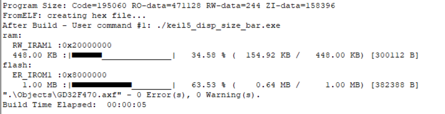
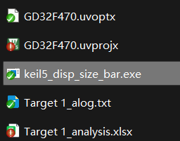
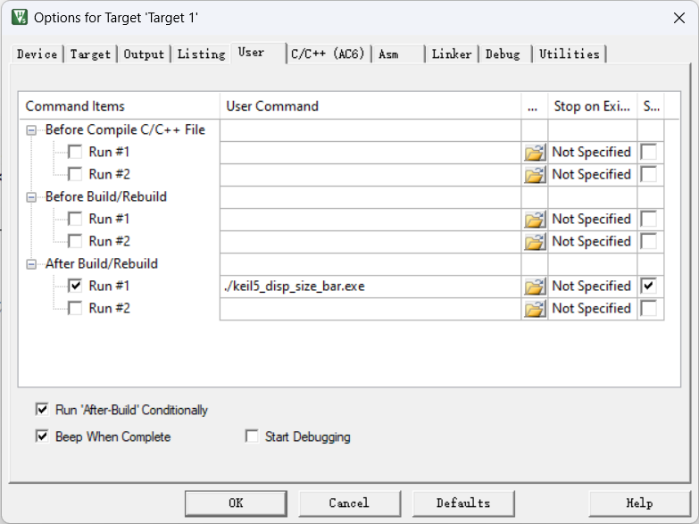

<!DOCTYPE lake>
<p data-lake-id="u4c3aec40" id="u4c3aec40"><span data-lake-id="u5cdba475" id="u5cdba475">开源项目地址：</span><a data-lake-id="u4ff5f749" href="https://gitee.com/nikolan/keil5_disp_size_bar" id="u4ff5f749" rel="noopener noreferrer" target="_blank"><span data-lake-id="udf2dce3d" id="udf2dce3d">https://gitee.com/nikolan/keil5_disp_size_bar</span></a></p><p data-lake-id="ub3a7558e" id="ub3a7558e"><br/></p><p data-lake-id="ua382da0c" id="ua382da0c"><span data-lake-id="u9f079643" id="u9f079643">编译后，可以显示内存和Flash空间占用比例</span></p><p data-lake-id="ue0295a72" id="ue0295a72"></p><p data-lake-id="uf48e1a71" id="uf48e1a71"><span data-lake-id="ue48752f1" id="ue48752f1">配置方式：</span></p><p data-lake-id="u55b4ae50" id="u55b4ae50"><a class="yuque-card-link" href="../../_assets/690b1611f6601f79c211a8d7.zip">keil5_disp_size_bar.zip</a></p><p data-lake-id="u25c4881f" id="u25c4881f"><span data-lake-id="u0e27b445" id="u0e27b445">将以上内容解压到工程入口同级目录：</span></p><p data-lake-id="u24f79bb1" id="u24f79bb1"></p><p data-lake-id="u7fb56f1f" id="u7fb56f1f"><span data-lake-id="ued5c895a" id="ued5c895a">配置项目Options：</span></p><p data-lake-id="u85a5803b" id="u85a5803b"><span data-lake-id="u1a94aaa4" id="u1a94aaa4">在After Build/Rebuild里勾选并填上</span></p><p data-lake-id="u5df7410c" id="u5df7410c"><code data-lake-id="u4b429806" id="u4b429806"><span data-lake-id="uf028db4d" id="uf028db4d">./keil5_disp_size_bar.exe</span></code></p><p data-lake-id="u8c21df10" id="u8c21df10"></p><p data-lake-id="u2db41eaa" id="u2db41eaa"><br/></p><p data-lake-id="ubde609b1" id="ubde609b1"><span data-lake-id="u23358e39" id="u23358e39">如果配置好之后仍不显示，应该是mingw/bin里缺少zlib1.dll库，可将如下文件下载后，解压，并将zlib1.dll拷贝到该工具同级目录。或放到mingw/bin目录中:</span></p><a class="yuque-card-link" href="https://www.yuque.com/attachments/yuque/0/2024/zip/27903758/1717005192498-683ed8b2-443a-4b21-a1a5-ca038c3ad4be.zip">localdoc：zlib1.zip</a>